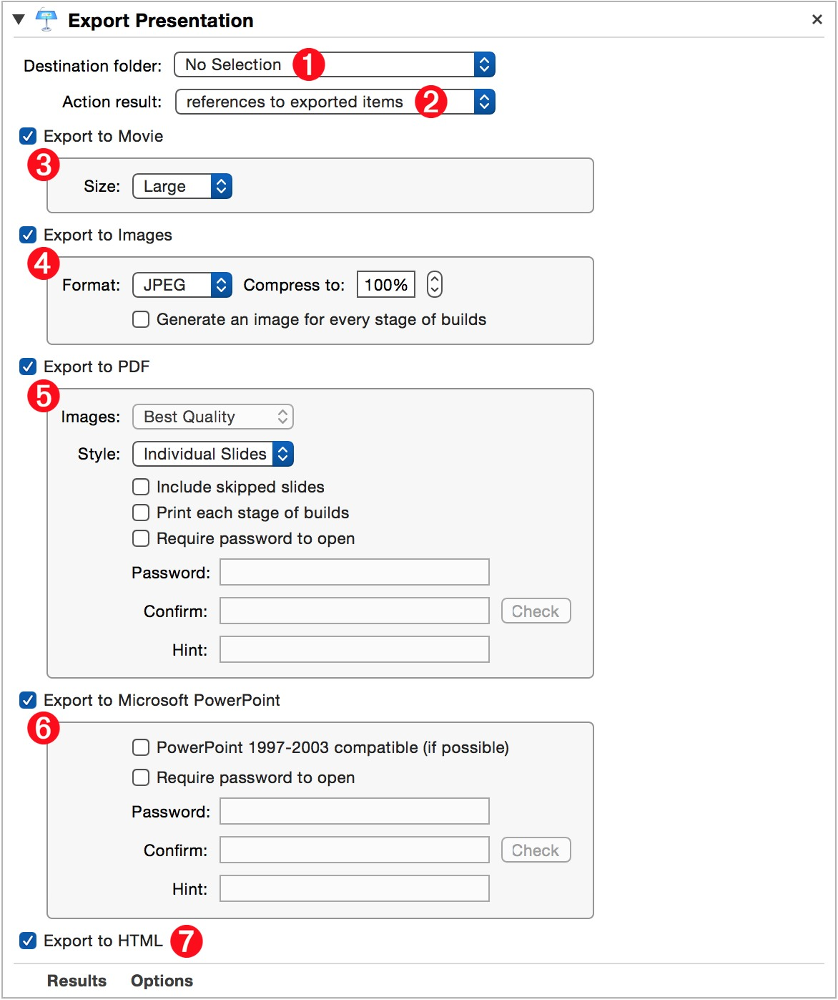

A common task performed in business environments is to share presentation files or summaries. The “Export Presentation” action can be a real time-saver by automating the sometimes cumbersome multi-step process of exporting a presentation to other formats.
The Action Information
| Input: | AppleScript reference(s) to the open Keynote document(s) whose contents are to be exported. |
| Output: | (user-selectable) This action returns either:
|
| Parameters: | User-settable parameters include:
|
| Related: | Other actions that often precede this action:
|
The Action Interface
The Export Presentation is a powerful and versatile action that duplicates much of the export functionality of the Keynote application.
In order to make all of the document export options available in simplified manner, each export option is displayed in its own box containing the available parameters for that export option.
One or more of the five export options can be activated for a single workflow execution, by selecting the checkbox to the left of the export option’s name.
1 Export Folder - Select the folder in which to place the exported documents.
2 Action Result Data Type - Select whether the result of this action should be references to the exported items, or references to the source Keynote documents.
3 Export to Movie - Select this option to export the referenced documents as movie files. The large setting will produce movie files with a height of 960 pixels.
4 Export to Images - Select this option to export the referenced documents as a collection of slide images. You can choose to have an image crated for each build of the presentation. In addition, if the export file format is JPEG, you can set the compression to be applied to the exported side images.

5 Export to PDF - Select this option to export the referenced document(s) as a multiple-paged PDF file(s). Styles for the PDF export include exporting as: individual slides, handouts, or slides with notes. In addition, a password can be assigned to the exported PDF document.
6 Export to PowerPoint - Select this option if you want to export the referenced Keynote documents to Microsoft PowerPoint files. If the presentation(s) to be exported do not include media files, such as movies or audio files, the older 1997-2003 file format can be chosen, otherwise the current open office file format will be used for the default export format.
7 Export to HTML - Select this option to export each referenced document as HTML content placed within its own folder. This HTML content is essentially functions as a mini-website and can be placed on a server to become available for others to view.
TIP: To easily share the exported content with other nearby Macs and iOS devices, follow this action with the “Begin AirDrop with Items” action as outlined in this example workflow.